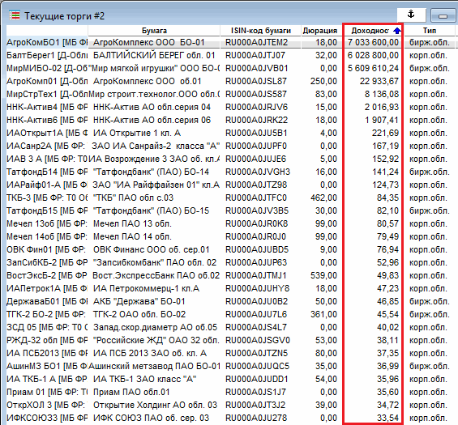
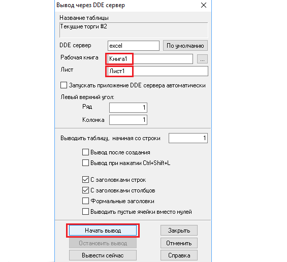
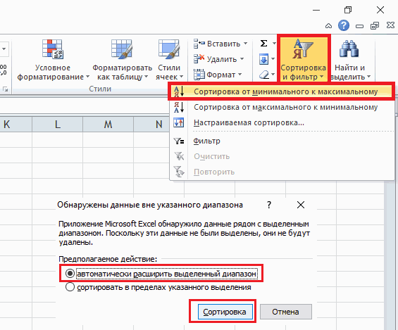

Итак, вы хотите вложить деньги на долговом рынке с той целью, чтобы получать фиксированную ежегодную доходность на протяжении нескольких лет. При этом желаете, чтобы доходность инвестиций была выше, чем предлагается в коммерческих банках, а надежность соответствовала безопасности банковских депозитов. В данной статье я покажу, как выбрать облигации правильно и удовлетворить всем выше перечисленным целям.
Предполагается, что вы уже выбрали брокера, открыли у него счет, завели деньги на депозит и получили платформу QUIK для торговли. Про то, как настроить QUIK для торговли облигациями, я подробно рассказывала в соответствующей статье. А теперь переходим к вопросу как выбрать облигации на практическом примере.
В программе QUIK ранжируем таблицу котировок с облигациями по доходности.

Дальше открываем пустой экселевский файл, после этого в Квике жмем на таблицу правой кнопкой мыши и выбираем пункт «Вывод через DDE сервер». В появившемся окне вносим нужные данные, в частности в строке «Рабочая книга» пишем «Книга1» (или название вашего экселевского файла), в строке «Лист» пишем «Лист1» (название листа этого файла). Жмем «Начать вывод».

После этого котировки из Квика попадают в Excel-файл. Теперь работаем в этом Excel-файле, сперва необходимо оставить только три столбца: название облигации, дюрацию и доходность. Фильтруем таблицу по столбцу доходности, для этого выделаем столбец «Доходность», сортируем через соответствующий фильтр, при этом автоматически расширяем выделенный диапазон.

После этого вопрос как выбрать облигации фактически сводится к вопросу о том, какую доходность вы желаете получить.
Рассуждаем следующим образом, если ключевой процент ЦБ РФ равен 10%, значит, эта доходность является средней рыночной безрисковой ставкой, т.е. в любом коммерческом банке вы легко можете получить такой процент. Отсюда следует, что:
Итак, покупая облигацию с доходностью 13%, вы ежегодно на счет будете получать 13%-ный доход к вашим первоначальным инвестициям, т.е. покупая облигацию, вы фиксируете конкретную доходность.
Итак, вы определились, что хотите получать ежегодно 13%-14% годовых. В Excel-файле необходимо удалить все строки с доходностями ниже 13% и выше 14%. Остается некоторое количество бумаг, которые теперь необходимо проранжировать по столбцу «Дюрация».
Теперь выбираем облигацию с максимальной дюрацией и проверяем компанию на предмет ее закредитованности. Для этого необходимо рассчитать несколько показателей на основе самого свежего бухгалтерского баланса компании. Подробную инструкцию как исключить риск дефолта эмитента читайте здесь. Если по итогам анализа бухбаланса вас все устраивает, то покупаем облигацию. Если не устраивает, то по той же схеме смотрим вторую по списку облигацию и т.д. пока не найдем оптимальный вариант.
Таким образом, мы подробно рассмотрели алгоритм как выбрать облигации с интересной доходностью и хорошей надежностью. Подобным способом можно отбирать бумаги и для других облигационных стратегий.